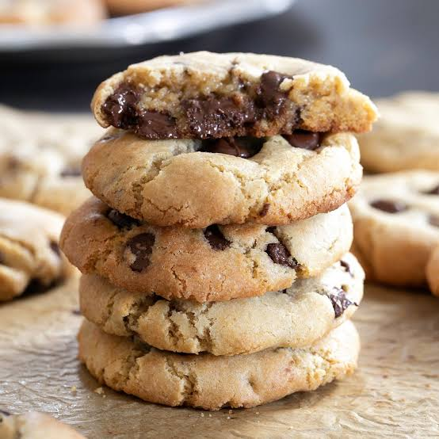

Cookies
Back to Home

Delicious Cookies Recipe
Description
Cookies are small, sweet baked treats that come in a variety of flavors and textures.
They are typically made with a combination of flour, sugar, butter, and eggs, and can include additional ingredients such as chocolate chips, nuts, or dried fruits. Cookies are a popular snack and dessert enjoyed by people of all ages.
Ingredients
- 1 cup unsalted butter, softened
- 1 cup granulated sugar
- 1 cup packed brown sugar
- 2 large eggs
- 1 teaspoon vanilla extract
- 3 cups all-purpose flour
- 1 teaspoon baking soda
- 1/2 teaspoon salt
- 2 cups semisweet chocolate chips
Instructions or Steps
- Step 1: Preheat your oven to 350°F (175°C) and line a baking sheet with parchment paper.
- Step 2: In a large bowl, cream together the butter, granulated sugar,
and brown sugar until light and fluffy. Beat in the eggs one at a time, then stir in the vanilla extract.
- Step 3: In a separate bowl, whisk together the flour, baking soda, and salt.
Gradually add the dry ingredients to the wet ingredients, mixing until just combined. Stir in the chocolate chips.
- Step 4: Drop rounded tablespoons of dough onto the prepared baking sheet,
spacing them about 2 inches apart. Bake for 10-12 minutes, or until the edges are golden brown.
Allow the cookies to cool on the baking sheet for a few minutes before transferring them to a wire rack to cool completely.